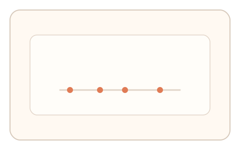
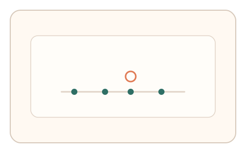
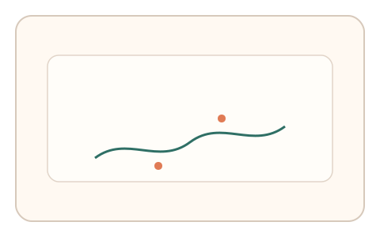

#148
F：意图/现实耦合 × 异步/随机插入（路径/预测误差）
已扩展
时钟抖动节拍
系统发出不规则时间脉冲，用户跟随点击，记录节律序列并与群体基线对比。
概念原文
系统给出不规则时间脉冲，用户跟随点击，记录节律序列并与群体基线对比。
把真实时钟抖动作为不可预测的节奏锚点。
研究背景
真实时钟抖动与微随机节拍会导致人类出现可解释的同步误差与修正曲线。利用不规则脉冲可提高脚本伪造成本。
核心机制
- 生成带抖动的不规则节拍序列。
- 用户跟随节拍点击。
- 记录相位偏差与修正过程。
- 与人类基线分布比对。
用户流程
- 步骤 1：用户看到不规则节拍提示。
- 步骤 2：跟随节拍完成点击序列。
- 步骤 3：系统分析相位偏差与抖动。
判定信号
相位偏差与修正
人类会滞后并逐步修正。
节拍间隔抖动
真实跟随存在自然抖动。
判定逻辑
相位偏差与抖动需符合人类区间；过度精准或无修正判异常。
对抗面
- 脚本使用固定间隔模拟点击
- 记录节拍后回放
防御与缓解
- 使用高分辨率计时抖动
- 随机化节拍段落与相位
- 加入干扰节拍检测恢复
可达性与风险
提供更慢节拍与音/视觉双通道提示。
- 设备延迟影响同步精度
- 节拍过快导致挫败
可视化状态

状态 1：不规则脉冲
节拍间隔不规则。

状态 2：跟随点击
用户跟随脉冲点击。

状态 3：抖动判定
分析相位偏差与节拍抖动。
参考资料
Sensorimotor synchronization
说明节拍同步与相位偏差。
Time perception
说明不规则节拍的时间感知。